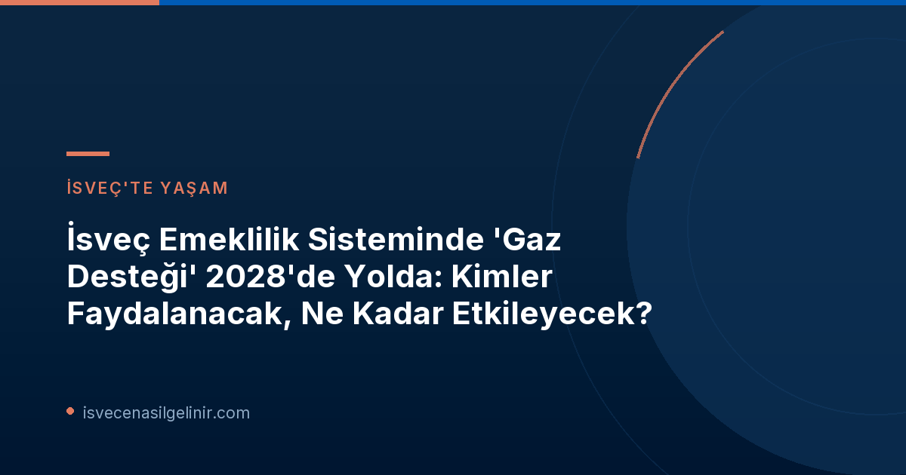

İsveç Emeklilik Kurumu Pensionsmyndigheten, yakın zamanda yaptığı bir duyuruyla, ülkenin emeklilik sistemine önemli bir yenilik getirecek olan "gaz desteği" (gas i pensionen) hakkında müjdeli haberler verdi. Bu destek mekanizmasının, 2028 yılı itibarıyla hem mevcut emeklilerin hem de aktif çalışanların gelir emekliliğini ve kazanılmış emeklilik haklarını güçlendirmesi bekleniyor. Bu rehberde, "gaz desteğinin" ne olduğunu, neden önemli olduğunu ve kimlerin bu yeni uygulamadan faydalanacağını ayrıntılarıyla inceleyeceğiz.
İsveç Emeklilik Sistemindeki "Gaz Desteği" Nedir?
"Gaz desteği", İsveç Parlamentosu tarafından Haziran 2026'da kabul edilen ve 2027 yılından itibaren yürürlüğe girecek olan bir düzenlemedir. Temel amacı, İsveç'in dinamik emeklilik sisteminde biriken fazlalıkların (överskott) hem emeklilik birikimi yapanlara hem de halihazırda emekli olanlara adil bir şekilde dağıtılmasını sağlamaktır. Bu fazlalıklar, kazanılmış emeklilik (intjänad pension), ödenen gelir emekliliği (utbetald inkomstpension) ve ek emeklilik (tilläggspension) gibi farklı emeklilik türlerini güçlendirmek için kullanılmaktadır.
Pensionsmyndigheten'in analisti Stefan Granbom'a göre, bu mekanizma sayesinde, emeklilik sistemi daha sürdürülebilir hale gelirken, emeklilerin ve gelecekteki emeklilerin alım gücü de korunmuş olacak.
2028'de Neden Önem Kazanıyor? 2027 Durumu
Pensionsmyndigheten'in daha önceki açıklamalarına göre, gelir emekliliği 2027 yılı başında %2,2 oranında artacak. Ancak, kurumun 2027 için yaptığı prognoslar, sistemdeki fazlalığın "gaz desteği" dağıtımına izin verecek düzeyde olmadığını göstermişti. Bu durum, 2027 yılında "gaz desteğinden" herhangi bir ödeme yapılmayacağı anlamına geliyordu.
Fakat, durum 2028 yılı için değişiyor! Pensionsmyndigheten'in hükümete sunduğu son prognoslara göre, "gaz desteğinin" 2028 yılından itibaren emekliler ve emeklilik birikimi yapanlar üzerinde olumlu bir etki yaratması bekleniyor. Bu etki, 2029 ve 2030 yıllarında da devam edecek.
Beklenen Etki ve Finansal Detaylar
Stefan Granbom'un vurguladığı gibi, "gaz desteği" ilk kez 2028'de kazanılmış emekliliği güçlendirecek ve bu durum 2029 ve 2030 yıllarında da sürecek. Kurumun prognosları, bu üç yıllık dönemde toplamda %1,22'lik bir güçlenmeye işaret ediyor. Kron bazında ise bu destek, ortalama bir gelir emekliliği için 2028-2030 dönemi boyunca kümülatif olarak yaklaşık 170 İsveç kronu katkı sağlayacak.
"Gaz Desteği"nin Beklenen Etkileri (2028-2030)
- Toplam Güçlenme Oranı: %1,22
- Ortalama Kümülatif Katkı: Yaklaşık 170 SEK (ortalama gelir emekliliği için)
- Faydalananlar: Emekliler ve emeklilik birikimi yapanlar
- Etkileyeceği Emeklilik Türleri: Kazanılmış emeklilik, ödenen gelir emekliliği, ek emeklilik
Bu prognoslar, İsveç Ulusal Ekonomi Araştırma Enstitüsü (Konjunkturinstitutet) tarafından belirlenen makroekonomik varsayımlar temel alınarak hesaplanmaktadır. Bu sayede, emeklilik sisteminin gelecekteki durumu hakkında gerçekçi ve güvenilir tahminler yapılabilmektedir.
İsveç Vatandaşlık Süreci ve Emeklilik Hakları İlişkisi
İsveç'te yaşamak, çalışmak ve emeklilik haklarından faydalanmak isteyen birçok kişi için vatandaşlık süreci önemli bir adımdır. İsveç vatandaşı olmak, ülkedeki sosyal güvenlik ve emeklilik sistemi ile tam entegrasyon anlamına gelir ve "gaz desteği" gibi yeniliklerden tam anlamıyla faydalanmanın kapısını açabilir. İsveç vatandaşlığına giden yolda atılması gereken adımlar, vatandaşlık testine hazırlık ve daha fazlası hakkında detaylı bilgi almak için sverigemedborgarskapsprov.com adresini ziyaret edebilirsiniz.
Sonuç ve Gelecek Beklentileri
"Gaz desteği" mekanizmasının 2028'de devreye girmesiyle, İsveç'in emeklilik sistemi daha güçlü ve daha esnek bir yapıya kavuşacak. Bu yenilik, özellikle geleceğe yönelik planlama yapan çalışanlar ve mevcut emekliler için olumlu bir haber niteliği taşıyor. Pensionsmyndigheten'in şeffaf prognosları, İsveç'in sosyal devlet anlayışının bir göstergesi olarak, vatandaşlarına güven veren bir gelecek sunma hedefinde olduğunu bir kez daha ortaya koyuyor.
Bu gelişmelerin ışığında, İsveç'teki yaşamınıza ve finansal planlamalarınıza yön verirken, Pensionsmyndigheten'in duyurularını takip etmek büyük önem taşımaktadır.
Referanslar:
- Pensionsmyndigheten Resmi Duyurusu: Gas i pensionen förväntas 2028
İsveç Emeklilik Sisteminde Geleceğinizi Güvence Altına Alın
İsveç'te emeklilik haklarınız, vatandaşlık süreci ve daha fazlası hakkında güncel bilgilere ulaşmak için bizi takip edin ve uzman danışmanlarımızla iletişime geçin.